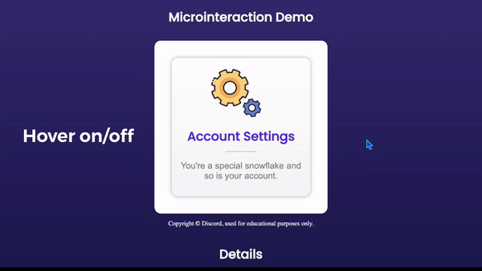
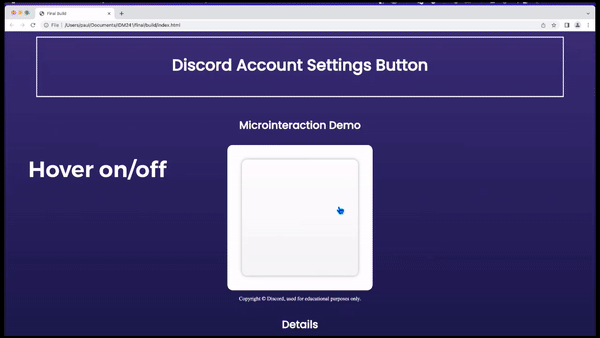

Discord Account Settings Button
Final
Triggers
- Hover on/off Account Settings block
- Click down on Account Settings Block
- Click up on Account Settings Block
- Hover on/off links contained in modal
- Hover on/off X button
- Click on X button
Rules
Account Settings Hover
- Pointer turns to standard hand icon.
- Blue-purple border fades in around the block, growing from 1 - 5 pixel width in .4 seconds.
- Two cogs rotate, yellow spins 180 degrees clockwise, purple cog spins 180 degrees counter-clockwise.
The rotation speed starts fasts and slows down as the animation plays through the full .4 second length.
- On hover off, cogs rotate another 180 degrees in the opposite direction as on hover, and border fades back to 0 width.
Account Settings Mouse Down
- Cogs spin at 360 degrees per second, the yellow spinning clockwise and purple spinning counter-clockwise.
- Account Settings button shrinks by 5% in height and width, over .15 seconds.
Account Settings Mouse Up
- Account Settings button returns to original size over .15 seconds, and border fades back to 0 width.
- Pointer turns back to default icon.
- Cogs continue to spin as on hold.
- Cogs and text move downward, easing into animation, fading to 0 opacity over .8 seconds, overflow is hidden.
- Settings modal rises from bottom of screen over .4 seconds and covers entire view.
Modal Link Hover
- Link turns from gray to purple and increases by .1rem over .2 seconds.
- The "See all articles" links do not change color, only grow in size by .1rem over .2 seconds.
- On hover off, hover animation reverses, text goes back to gray and 1.3 rem size over .2 seconds.
X button
- Hovering over the X makes purple 5 pixel border fade in from 0 to 1 opacity over .3 seconds.
- Pointer turns to standard hand icon.
- On click, X button fades to 0 opacity over .3 seconds.
- After X border disappears, Settings page box lowers down off the screen in .4 seconds, ease in.
Feedback
Account Settings Hover
- Pointer turns to standard hand icon.
- Blue-purple border fades in around the block, growing from 1 - 5 pixel width in .4 seconds.
- Two cogs rotate, yellow spins 180 degrees clockwise, purple cog spins 180 degrees counter-clockwise.
The rotation speed starts fasts and slows down as the animation plays through the full .4 second length.
- On hover off, cogs rotate another 180 degrees in the opposite direction as on hover, and border fades back to 0 width.
Account Settings Mouse Down
- Cogs spin at 360 degrees per second, the yellow spinning clockwise and purple spinning counter-clockwise.
- Account Settings button shrinks by 5% in height and width, over .15 seconds.
Account Settings Mouse Up
- Account Settings button returns to original size over .15 seconds, and border fades back to 0 width.
- Pointer turns back to default icon.
- Cogs continue to spin as on hold.
- Cogs and text move downward, easing into animation, fading to 0 opacity over .8 seconds, overflow is hidden.
- Settings modal rises from bottom of screen over .4 seconds and covers entire view.
Modal Link Hover
- Link turns from gray to purple and increases by .1rem over .2 seconds.
- The "See all articles" links do not change color, only grow in size by .1rem over .2 seconds.
- On hover off, hover animation reverses, text goes back to gray and 1.3 rem size over .2 seconds.
X button
- Hovering over the X makes purple 5 pixel border fade in from 0 to 1 opacity over .3 seconds.
- Pointer turns to standard hand icon.
- On click, X button fades to 0 opacity over .3 seconds.
- After X border disappears, Settings page box lowers down off the screen in .4 seconds, ease in.
Loops/Modes
- The settings page information box is a mode that appears when the Account Settings button is clicked.
- The spinning cog animation is a loop that plays when holding down a click on the Account Settings button.
Demo Gifs

